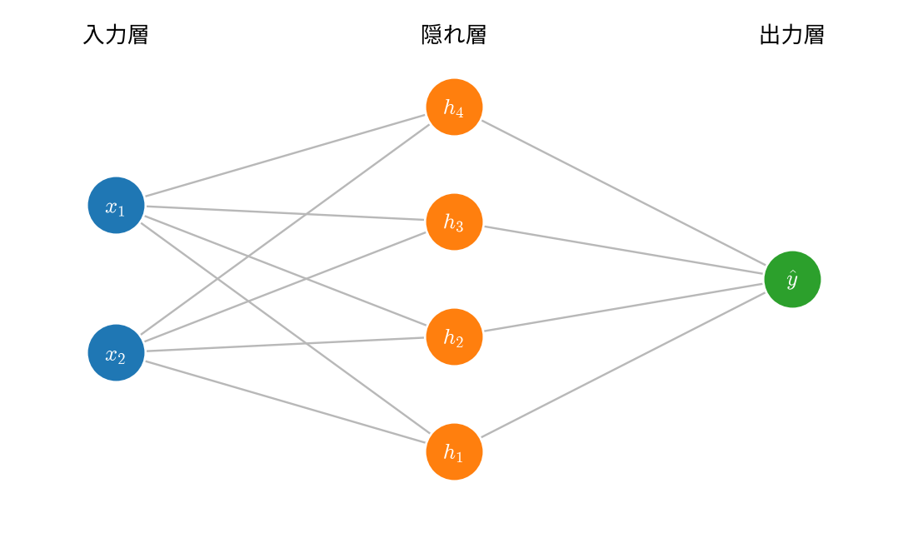
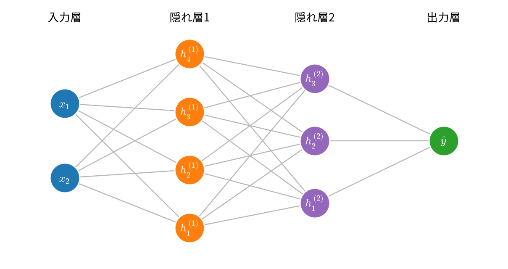
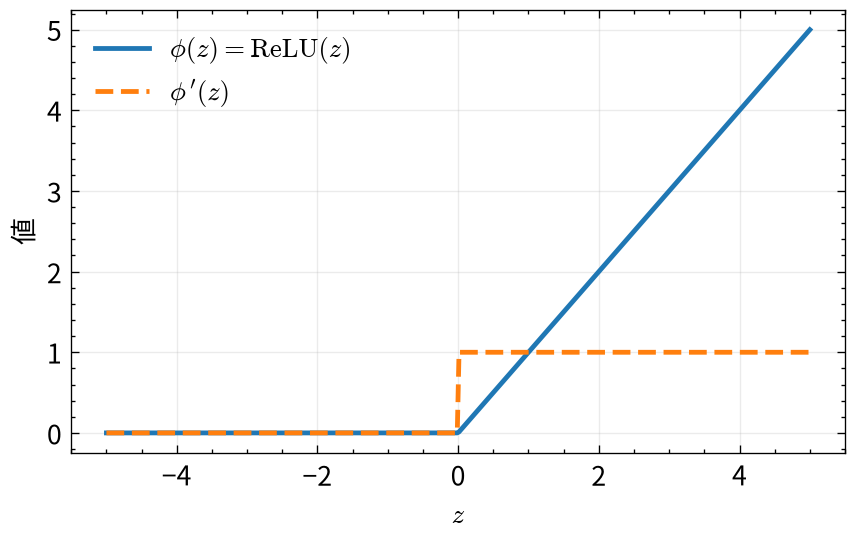
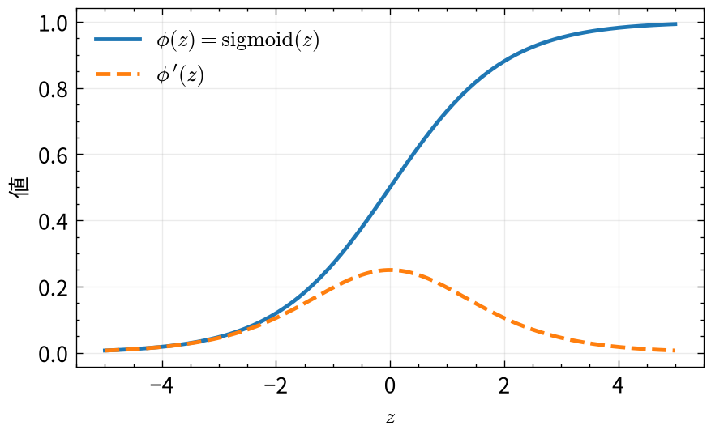
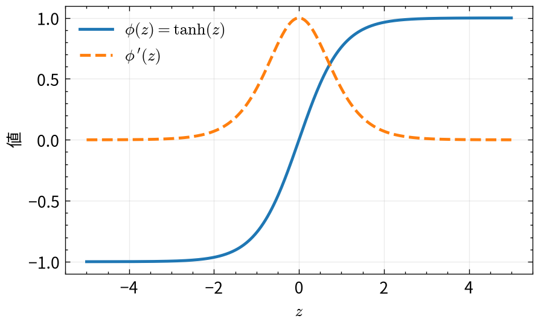
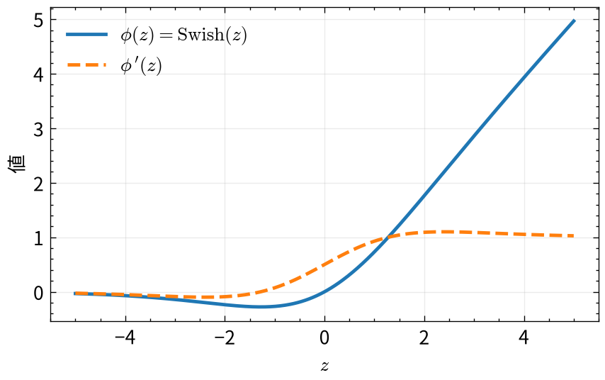
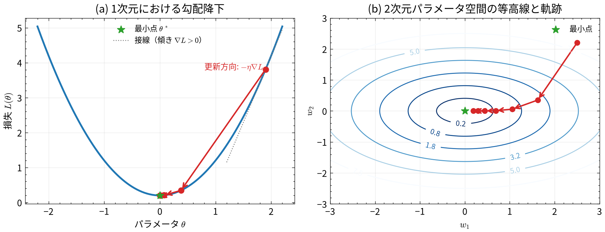
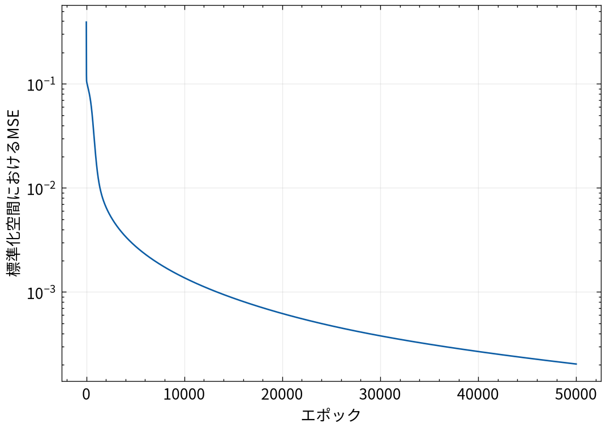
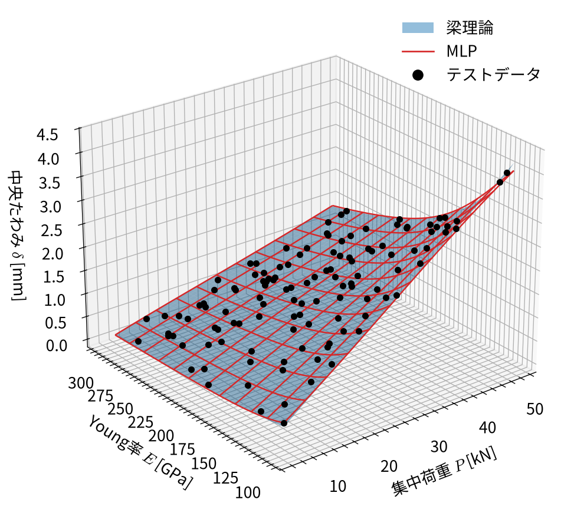

3 多層パーセプトロン
3.1 この章で学ぶこと
第2章では、重回帰モデルが複数の説明変数を扱える一方で、予測結果は平面または超平面に 限定されることを確認しました。本章では、線形変換と非線形変換を組み合わせた 多層パーセプトロン（multilayer perceptron; MLP）を扱います。
本章の目的は、次の事項を理解することです。
- ニューロンが行う線形変換と非線形変換
- 入力層、隠れ層、出力層からなるMLPの構造
- 行列を用いた順伝播の計算
- 活性化関数が必要な理由
- 誤差逆伝播法による勾配の計算
- 勾配降下法によるパラメータの更新
- NumPyによる1隠れ層MLPの実装
3.2 重回帰モデルからニューロンへ
前章でやったように、重回帰モデルは
\[ \hat{y} = \boldsymbol{w}^{\mathsf T}\boldsymbol{x}+b \tag{3.1}\]
と表されます。ここで、\(\boldsymbol{x}\in\mathbb{R}^{D}\) は入力ベクトル、 \(\boldsymbol{w}\in\mathbb{R}^{D}\) は重みベクトル、\(b\) はバイアスです。
MLPを構成する1つのニューロンも、まず同じ線形結合を計算します。
\[ z = \boldsymbol{w}^{\mathsf T}\boldsymbol{x}+b \tag{3.2}\]
その後、\(z\) に活性化関数 \(\phi\) を適用し、ニューロンの出力を
\[ h=\phi(z) \tag{3.3}\]
とします。\(z\) は活性化関数を適用する前の値であり、\(h\) は活性化後の出力です。活性化関数というとわかりにくいですが、代表的にはTanh関数などの非線形関数を指します。活性化関数を適用することで、ニューロンは入力に対して非線形な応答を示すことができます。
重回帰とニューロンの本質的な違いは、式 3.3 の非線形変換にあります。
3.3 MLPの構造
MLPは複数のニューロンを層状に接続したモデルです。最も基本的なMLPは、 次の3種類の層から構成されます。
- 入力層：説明変数をモデルへ入力する
- 隠れ層：線形変換と活性化関数による非線形変換を行う
- 出力層：隠れ層の出力を組み合わせて予測値を計算する
図 3.1 に、2入力、4隠れユニット、1出力のMLPを示します。
入力層は通常、値を保持するだけで、学習可能な計算は行いません。学習対象となる重みと バイアスは、入力層から隠れ層、および隠れ層から出力層への接続に含まれます。
図 3.1 に示した 2入力（\(x_1, x_2\)）、4隠れユニット（\(h_1, h_2, h_3, h_4\)）、1出力（\(\hat{y}\)）のモデルを例にして、順伝播の計算を各ニューロンの数式で具体的に書き下してみましょう。
3.3.1 入力層から隠れ層への計算
まず、各隠れユニットにおいて、入力の線形結合にバイアスを加えた隠れ状態 \(z_j^{(1)}\)（\(j=1,2,3,4\)）を計算します。
\[ \begin{aligned} z_1^{(1)} &= w_{11}^{(1)} x_1 + w_{21}^{(1)} x_2 + b_1^{(1)} \\ z_2^{(1)} &= w_{12}^{(1)} x_1 + w_{22}^{(1)} x_2 + b_2^{(1)} \\ z_3^{(1)} &= w_{13}^{(1)} x_1 + w_{23}^{(1)} x_2 + b_3^{(1)} \\ z_4^{(1)} &= w_{14}^{(1)} x_1 + w_{24}^{(1)} x_2 + b_4^{(1)} \end{aligned} \]
ここで、\(w_{ij}^{(1)}\) は入力 \(x_i\) から隠れユニット \(j\) への重み、\(b_j^{(1)}\) は隠れユニット \(j\) のバイアスです。 これらに活性化関数 \(\phi\) を適用し、隠れ層の出力 \(h_j\) を得ます。
\[ h_1 = \phi\left(z_1^{(1)}\right), \quad h_2 = \phi\left(z_2^{(1)}\right), \quad h_3 = \phi\left(z_3^{(1)}\right), \quad h_4 = \phi\left(z_4^{(1)}\right) \]
3.3.2 隠れ層から出力層への計算
得られた隠れ層の出力 \(h_1, \dots, h_4\) を重み付けして足し合わせ、バイアス \(b^{(2)}\) を加えて最終的な予測値 \(\hat{y}\) を計算します。
\[ \hat{y} = w_1^{(2)} h_1 + w_2^{(2)} h_2 + w_3^{(2)} h_3 + w_4^{(2)} h_4 + b^{(2)} \]
ここで、\(w_j^{(2)}\) は隠れユニット \(h_j\) から出力層への重み、\(b^{(2)}\) は出力層のバイアスです。
3.3.3 ベクトル・行列による行列表現
上記の計算は、ベクトルと行列を用いると簡潔に表現できます。 入力ベクトル \(\boldsymbol{x} \in \mathbb{R}^2\)、重み行列 \(\mathbf{W}^{(1)} \in \mathbb{R}^{2 \times 4}\)、バイアスベクトル \(\boldsymbol{b}^{(1)} \in \mathbb{R}^4\) を
\[ \boldsymbol{x} = \begin{bmatrix} x_1 \\ x_2 \end{bmatrix}, \qquad \mathbf{W}^{(1)} = \begin{bmatrix} w_{11}^{(1)} & w_{12}^{(1)} & w_{13}^{(1)} & w_{14}^{(1)} \\ w_{21}^{(1)} & w_{22}^{(1)} & w_{23}^{(1)} & w_{24}^{(1)} \end{bmatrix}, \qquad \boldsymbol{b}^{(1)} = \begin{bmatrix} b_1^{(1)} \\ b_2^{(1)} \\ b_3^{(1)} \\ b_4^{(1)} \end{bmatrix} \]
とおくと、隠れ層の事前活性化ベクトル \(\boldsymbol{z}^{(1)} \in \mathbb{R}^4\) は
とまとめられます。隠れ層の出力ベクトル \(\boldsymbol{h} \in \mathbb{R}^4\) は、活性化関数 \(\phi\) を要素ごとに適用して
となり、重みベクトル \(\boldsymbol{w}^{(2)} = \begin{bmatrix} w_1^{(2)} & w_2^{(2)} & w_3^{(2)} & w_4^{(2)} \end{bmatrix}^{\mathsf T} \in \mathbb{R}^4\) を用いて予測値 \(\hat{y}\) は
\[ \hat{y} = \boldsymbol{w}^{(2)\mathsf T}\boldsymbol{h}+b^{(2)} \tag{3.6}\]
と表されます。
このように、式 3.4、式 3.5、式 3.6 の順に入力から出力へ計算を進める処理を順伝播（forward propagation）と呼びます。 入力の次元を \(D\)、隠れユニット数を \(H\) とした一般的な場合も、\(\mathbf{W}^{(1)}\in\mathbb{R}^{D\times H}, \boldsymbol{b}^{(1)}\in\mathbb{R}^H, \boldsymbol{w}^{(2)}\in\mathbb{R}^H\) とすれば全く同じ形式の式が成り立ちます。
3.3.4 複数データの行列表現
\(N\) 個の入力を行ごとに並べた入力行列を \(\mathbf{X}\in\mathbb{R}^{N\times D}\) とします。すべてのデータに対する順伝播は
\[ \mathbf{H} = \phi\left(\mathbf{Z}^{(1)}\right) \tag{3.8}\]
\[ \hat{\boldsymbol{y}} = \mathbf{H}\boldsymbol{w}^{(2)} +b^{(2)}\boldsymbol{1} \tag{3.9}\]
と表せます。ここで、\(\boldsymbol{1}\in\mathbb{R}^{N}\) はすべての成分が1のベクトルです。
| 変数 | 形状 | 内容 |
|---|---|---|
| \(\mathbf{X}\) | \(N\times D\) | 入力行列 |
| \(\mathbf{W}^{(1)}\) | \(D\times H\) | 入力層から隠れ層への重み行列 |
| \(\boldsymbol{b}^{(1)}\) | \(H\) | 隠れ層のバイアスベクトル |
| \(\mathbf{Z}^{(1)}\) | \(N\times H\) | 隠れ層の事前活性化行列 |
| \(\mathbf{H}\) | \(N\times H\) | 隠れ層の出力行列 |
| \(\boldsymbol{w}^{(2)}\) | \(H\) | 隠れ層から出力層への重みベクトル |
| \(\hat{\boldsymbol{y}}\) | \(N\) | 予測値ベクトル |
3.3.5 複数の隠れ層をもつ場合への拡張
ニューラルネットワークでは、表現力を高めるために隠れ層を2層以上重ねることが一般的です（一応、一説によると、隠れ層が2層以上あるものを深層学習モデルと呼ぶとかいう話もあります）。
図 3.2 に、2つの隠れ層をもつMLP（2入力、第1隠れ層4ユニット、第2隠れ層3ユニット、1出力）を示します。

隠れ層の総数を \(L\) 層とします。便宜上、入力層を第0層の出力 \(\boldsymbol{h}^{(0)} = \boldsymbol{x} \in \mathbb{R}^D\) とみなすと、各隠れ層 \(l = 1, 2, \ldots, L\) における順伝播は次のような再帰的な関係式で一般化できます。
ここで、第 \(l\) 層のユニット数を \(H_l\)（\(H_0 = D\)）とすると、 \(\mathbf{W}^{(l)} \in \mathbb{R}^{H_{l-1} \times H_l}\)、\(\boldsymbol{b}^{(l)} \in \mathbb{R}^{H_l}\)、\(\boldsymbol{z}^{(l)}, \boldsymbol{h}^{(l)} \in \mathbb{R}^{H_l}\) です。
そして最終出力層（第 \(L+1\) 層）では、最後の隠れ層の出力 \(\boldsymbol{h}^{(L)}\) を用いて予測値 \(\hat{y}\) を計算します。
\[ \hat{y} = \boldsymbol{w}^{(L+1)\mathsf T}\boldsymbol{h}^{(L)} +b^{(L+1)} \tag{3.12}\]
複数データ（入力行列 \(\mathbf{X} \in \mathbb{R}^{N \times D}\)）に対するバッチ処理も同様に、\(\mathbf{H}^{(0)} = \mathbf{X}\) として各層で
\[ \mathbf{Z}^{(l)} = \mathbf{H}^{(l-1)}\mathbf{W}^{(l)} + \boldsymbol{1}\boldsymbol{b}^{(l)\mathsf T} \]
\[ \mathbf{H}^{(l)} = \phi\left(\mathbf{Z}^{(l)}\right) \]
を繰り返し、最終的に \(\hat{\boldsymbol{y}} = \mathbf{H}^{(L)}\boldsymbol{w}^{(L+1)} + b^{(L+1)}\boldsymbol{1}\) を計算します。
このように、前の層の出力 \(\boldsymbol{h}^{(l-1)}\) が次の層への「新しい特徴量（入力）」となり、「線形変換 \(\to\) 非線形変換」を繰り返すことで、より複雑で高度な関数の表現が可能になります。
3.4 活性化関数とその微分
活性化関数は、MLPに非線形性を導入するだけでなく、後から説明する学習時（誤差逆伝播法）における勾配の伝播にも大きな影響を与えます。 （後から詳しく説明しますが）連鎖律により、損失関数の隠れ状態 \(z\) に関する勾配は
\[ \frac{\partial L}{\partial z} = \frac{\partial L}{\partial h} \cdot \frac{d\phi(z)}{dz} \]
として計算されるため、活性化関数の形状だけでなく、その導関数 \(\phi'(z) = \frac{d\phi(z)}{dz}\) の大きさや性質がネットワークの学習のしやすさを左右します。
代表的な3つの活性化関数とその導関数を次に示します。 代表的な活性化関数とその導関数を次に示します。
3.4.1 ReLU（Rectified Linear Unit）
\[ \operatorname{ReLU}(z) = \max(0, z) \]
\[ \frac{d}{dz}\operatorname{ReLU}(z) = \begin{cases} 1 & (z > 0) \\ 0 & (z < 0) \end{cases} \]
\(z > 0\) の領域で微分が常に \(1\) であるため、層を深く重ねても勾配が小さくならず（特に層数の多いモデルを作ろうとすると、これがかなり重要だったりします）、現代の深層学習で標準的に用いられています。

3.4.2 シグモイド関数（Sigmoid）
\[ \operatorname{sigmoid}(z) = \frac{1}{1 + \exp(-z)} \]
\[ \frac{d}{dz}\operatorname{sigmoid}(z) = \operatorname{sigmoid}(z)\left(1 - \operatorname{sigmoid}(z)\right) \]
出力を \((0, 1)\) の確率的な範囲に収めるため二値分類の出力層などで使われます。ただし、導関数の最大値が \(z=0\) で \(0.25\) であり、\(|z|\) が大きい領域では導関数がほぼ \(0\) になるため、多層化すると入力層へ向かうにつれて勾配が急激に減衰する勾配消失問題（vanishing gradient problem）を引き起こしやすい性質があります。

3.4.3 双曲線正接関数（tanh）
\[ \tanh(z) = \frac{\exp(z) - \exp(-z)}{\exp(z) + \exp(-z)} \]
\[ \frac{d}{dz}\tanh(z) = 1 - \tanh^2(z) \tag{3.13}\]
出力が \((-1, 1)\) で原点対称（平均が0付近）となるため、シグモイド関数よりも勾配の伝播が安定しやすい利点があります。導関数の最大値は \(z=0\) で \(1.0\) ですが、\(|z|\) が大きい領域（飽和領域）では導関数が \(0\) に近づきます。本章の実装では、滑らかで原点対称な tanh を使用します（MLPの場合は、tanhが用いられることも多いです）。

3.4.4 Swish（SiLU）
\[ \operatorname{Swish}(z) = z \cdot \operatorname{sigmoid}(z) = \frac{z}{1 + \exp(-z)} \]
\[ \frac{d}{dz}\operatorname{Swish}(z) = \operatorname{Swish}(z) + \operatorname{sigmoid}(z)\left(1 - \operatorname{Swish}(z)\right) \]
Swish（PyTorchなどでは SiLU; Sigmoid Linear Unit とも呼ばれます）は、Googleの研究チームによって発見された活性化関数です。 ReLUと同様に \(z > 0\) で入力がそのまま伝わり勾配消失を防ぐ性質を持ちながら、原点付近で折れ曲がらず滑らかに微分可能であり、\(z < 0\) でわずかに負の値（最小値約 \(-0.28\)）をとる非単調性（non-monotonicity）を持ちます。これにより多くの深層モデルでReLU以上の高い表現力と学習の安定性を発揮し、近年（LLaMAなどの大規模言語モデルや画像生成モデルなど）広く採用されています。

3.4.5 活性化関数がない場合
活性化関数を恒等関数 \(\phi(z)=z\) とすると、1つの隠れ層からなるMLPは
\[ \hat{y} = \boldsymbol{w}^{(2)\mathsf T} \left( \mathbf{W}^{(1)\mathsf T}\boldsymbol{x} +\boldsymbol{b}^{(1)} \right) +b^{(2)} \]
となります。これを整理すると、
\[ \hat{y} = \tilde{\boldsymbol{w}}^{\mathsf T}\boldsymbol{x} +\tilde{b} \]
という1つの線形モデルになります。層を何層重ねても、線形変換だけでは全体も線形変換です。 MLPが重回帰では表せない関係を学習するためには、非線形な活性化関数が必要です。
3.5 損失関数
回帰問題であるため、本章でも平均二乗誤差を使用します。
\[ L = \frac{1}{N}\sum_{i=1}^{N} \left(y_i-\hat{y}_i\right)^2 \tag{3.14}\]
重回帰ではMSEを最小にするパラメータを閉じた式で求められました。一方、MLPでは 活性化関数を含むため、一般に最適なパラメータを逆行列などの閉じた式で求められません。 そこで、損失関数の勾配を誤差逆伝播法により計算し、勾配降下法でパラメータを更新します。
3.6 誤差逆伝播法
誤差逆伝播法（backpropagation）は、合成関数の微分である連鎖律（chain rule）を利用して、損失関数 \(L\) を起点とし、出力側から入力側へ逆向きに勾配を伝播させる計算方法です。
ここでは、図 3.1 で示した1つの隠れ層をもつMLP（入力次元 \(D\)、隠れユニット数 \(H\)、隠れ層の活性化関数に tanh、1出力）を対象に、損失関数 \(L\) から各層のパラメータに対する勾配を行列表現で順に導出します。
順伝播が入力から出力へ向かう計算であるのに対し、
\[ \mathbf{X} \longrightarrow \mathbf{Z}^{(1)} \longrightarrow \mathbf{H} \longrightarrow \hat{\boldsymbol{y}} \longrightarrow L \]
誤差逆伝播法ではこの計算の流れを逆向きに辿り、各層のパラメータに対する勾配を求めます。
\[ L \longrightarrow \hat{\boldsymbol{y}} \longrightarrow \begin{cases} \boldsymbol{w}^{(2)}, b^{(2)} & (\text{出力層パラメータの勾配}) \\ \mathbf{H} \longrightarrow \mathbf{Z}^{(1)} \longrightarrow \mathbf{W}^{(1)}, \boldsymbol{b}^{(1)} & (\text{隠れ層パラメータの勾配}) \end{cases} \]
3.6.1 ステップ1：損失関数 \(L\) の出力 \(\hat{\boldsymbol{y}}\) による微分
出発点は、損失関数（平均二乗誤差 \(L\)）です。
\[ L = \frac{1}{N}\sum_{i=1}^{N} \left(y_i - \hat{y}_i\right)^2 = \frac{1}{N}\left\|\hat{\boldsymbol{y}} - \boldsymbol{y}\right\|_2^2 \]
まず、この損失関数 \(L\) をモデルの予測値ベクトル \(\hat{\boldsymbol{y}} \in \mathbb{R}^N\) で微分します。予測誤差を表すベクトルを \(\boldsymbol{e} = \hat{\boldsymbol{y}} - \boldsymbol{y}\) とおくと、
\[ \frac{\partial L}{\partial\hat{\boldsymbol{y}}} = \frac{2}{N}\left(\hat{\boldsymbol{y}} - \boldsymbol{y}\right) = \frac{2}{N}\boldsymbol{e} \tag{3.15}\]
となります。この出力誤差勾配を \(\boldsymbol{g}^{(2)} \in \mathbb{R}^N\) とおきます。
3.6.2 ステップ2：出力層パラメータの勾配と隠れ層への逆伝播
出力層の順伝播の式は \(\hat{\boldsymbol{y}} = \mathbf{H}\boldsymbol{w}^{(2)} + b^{(2)}\boldsymbol{1}\) でした。連鎖律を適用して、出力層の重み \(\boldsymbol{w}^{(2)}\)、バイアス \(b^{(2)}\)、および隠れ層の出力 \(\mathbf{H}\) に関する勾配を計算します。
重み \(\boldsymbol{w}^{(2)} \in \mathbb{R}^H\) に対する勾配は、
\[ \frac{\partial L}{\partial\boldsymbol{w}^{(2)}} = \mathbf{H}^{\mathsf T}\boldsymbol{g}^{(2)} \tag{3.16}\]
バイアス \(b^{(2)} \in \mathbb{R}\) に対する勾配は、各データの勾配の総和として
\[ \frac{\partial L}{\partial b^{(2)}} = \boldsymbol{1}^{\mathsf T}\boldsymbol{g}^{(2)} \tag{3.17}\]
となります。また、さらに前の隠れ層へ勾配を伝えるために、隠れ層の出力 \(\mathbf{H} \in \mathbb{R}^{N \times H}\) に対する勾配を計算すると、
\[ \frac{\partial L}{\partial\mathbf{H}} = \boldsymbol{g}^{(2)}\boldsymbol{w}^{(2)\mathsf T} \]
が得られます。
3.6.3 ステップ3：活性化関数の逆伝播（事前活性化の勾配）
隠れ層の出力は \(\mathbf{H} = \phi\left(\mathbf{Z}^{(1)}\right) = \tanh\left(\mathbf{Z}^{(1)}\right)\) です。連鎖律と tanh の微分 \(\phi'(z) = 1 - \tanh^2(z) = 1 - h^2\)（式 3.13）を用いると、隠れ状態からなる行列 \(\mathbf{Z}^{(1)} \in \mathbb{R}^{N \times H}\) に関する勾配 \(\mathbf{G}^{(1)}\) は
\[ \mathbf{G}^{(1)} = \frac{\partial L}{\partial\mathbf{Z}^{(1)}} = \frac{\partial L}{\partial\mathbf{H}} \odot \left( \mathbf{1}_{N\times H} -\mathbf{H}\odot\mathbf{H} \right) \tag{3.18}\]
となります。ここで、\(\mathbf{1}_{N\times H}\) はすべての成分が1の行列、\(\odot\) は要素ごとの積（Hadamard積）を表します。
3.6.4 ステップ4：隠れ層パラメータの勾配
隠れ層の事前活性化は \(\mathbf{Z}^{(1)} = \mathbf{X}\mathbf{W}^{(1)} + \boldsymbol{1}\boldsymbol{b}^{(1)\mathsf T}\) でした。\(\mathbf{G}^{(1)}\) を用いて、入力層から隠れ層への重み \(\mathbf{W}^{(1)}\) とバイアス \(\boldsymbol{b}^{(1)}\) の勾配を計算します。
\[ \frac{\partial L}{\partial\mathbf{W}^{(1)}} = \mathbf{X}^{\mathsf T}\mathbf{G}^{(1)} \tag{3.19}\]
\[ \frac{\partial L}{\partial\boldsymbol{b}^{(1)}} = \mathbf{G}^{(1)\mathsf T}\boldsymbol{1} \tag{3.20}\]
このように、損失関数 \(L\) を起点として順伝播と逆順に連鎖律を適用していくことで、すべての層のパラメータの勾配を漏れなく効率的に計算できます。
3.7 勾配降下法
誤差逆伝播法によって各パラメータに関する損失関数の勾配が求まったら、勾配降下法（gradient descent）を用いてパラメータを更新し、損失を最小化します。
3.7.1 パラメータの更新式
学習率を \(\eta > 0\)（learning rate）とすると、すべてのパラメータは勾配と反対の方向へ更新されます。
\[ \begin{aligned} \mathbf{W}^{(1)} &\leftarrow \mathbf{W}^{(1)} - \eta \frac{\partial L}{\partial\mathbf{W}^{(1)}} \\ \boldsymbol{b}^{(1)} &\leftarrow \boldsymbol{b}^{(1)} - \eta \frac{\partial L}{\partial\boldsymbol{b}^{(1)}} \\ \boldsymbol{w}^{(2)} &\leftarrow \boldsymbol{w}^{(2)} - \eta \frac{\partial L}{\partial\boldsymbol{w}^{(2)}} \\ b^{(2)} &\leftarrow b^{(2)} - \eta \frac{\partial L}{\partial b^{(2)}} \end{aligned} \tag{3.21}\]
勾配 \(\nabla L\) は「損失関数が最も急激に増加する方向」を指すベクトルです。したがって、その反対方向（\(-\nabla L\)）へ学習率 \(\eta\) のステップ幅でパラメータを移動させることで、損失を局所的に減少させることができます。
なお、この勾配降下によるパラメータ更新の回数をエポック（epoch）と呼びます。1エポックは、すべての訓練データを1回ずつ用いてパラメータを更新することを意味します。
3.7.2 勾配降下法の直感的理解
図 3.7 に、勾配降下法の直感的な概念図を示します。

- (a) 1次元における考え方：パラメータ \(\theta\) での接線の傾き（勾配）が正（右上がり）であれば、左方向（負の方向）へ進むことで損失が減少します。傾きが負（右下がり）であれば右方向へ進みます。いずれの場合も「\(-\nabla L\)」の向きへ進むことで最小点 \(\theta^*\) に近づきます。
- (b) 多次元における考え方：パラメータが複数ある場合、損失関数の等高線に対して最も直角に降る方向（最急降下方向）へステップを進めることで、すり鉢状の底（最小点）へ向かって探索が進みます。
3.8 例題：荷重とヤング率から梁のたわみを予測する
第2章の最後に扱った問題をMLPで学習します。断面と支間を固定した単純支持梁に中央集中荷重 \(P\) が作用するとき、中央たわみは
\[ \delta = \frac{PL^3}{48EI} \tag{3.22}\]
です。説明変数を \(P\) と \(E\) とすると、\(delta\propto P/E\) であるため、前章で説明したように重回帰の平面では 関係全体を表現できません。本章では、梁理論の式をMLPには与えず、観測された \((P_i,E_i,\delta_i)\) の組だけから関係を学習します。
3.8.1 データの作成
荷重とYoung率を指定範囲内からランダムに生成し、梁理論から中央たわみを計算します。 ここではMLPの表現能力を確認するため、測定誤差は加えません。
rng = np.random.default_rng(2026)
n_samples = 600
P = rng.uniform(5.0, 50.0, n_samples) # 集中荷重 [kN]
E = rng.uniform(100.0, 300.0, n_samples) # Young率 [GPa]
span_length = 3.0
section_width = 0.10
section_height = 0.20
second_moment = section_width * section_height**3 / 12
y = (
(P * 1e3) * span_length**3
/ (48 * (E * 1e9) * second_moment)
) * 1e3
X = np.column_stack([P, E])3.8.2 学習データとテストデータ
モデルの学習に使うデータと、学習後の性能を評価するデータを分けます。ここでは全データの 80%を学習データ、20%をテストデータとします。
indices = rng.permutation(n_samples)
n_train = int(0.8 * n_samples)
train_indices = indices[:n_train]
test_indices = indices[n_train:]
X_train = X[train_indices]
y_train = y[train_indices]
X_test = X[test_indices]
y_test = y[test_indices]
print(f"学習データ数: {X_train.shape[0]}")
print(f"テストデータ数: {X_test.shape[0]}")学習データ数: 480
テストデータ数: 120テストデータはパラメータの更新には使用せず、学習後の評価にのみ使用します。
3.8.3 標準化
\(P\) と \(E\) では値の範囲が異なるため、各説明変数を平均0、標準偏差1となるように 標準化します。目的変数も同様に標準化します。
\[ x'_{ij} = \frac{x_{ij}-\mu_j}{\sigma_j} \]
平均と標準偏差は学習データだけから計算します。テストデータに対しても、学習データから 得た平均と標準偏差を使用します。
X_mean = X_train.mean(axis=0)
X_std = X_train.std(axis=0)
y_mean = y_train.mean()
y_std = y_train.std()
X_train_std = (X_train - X_mean) / X_std
X_test_std = (X_test - X_mean) / X_std
y_train_std = (y_train - y_mean) / y_std3.8.4 パラメータの初期化
隠れユニット数を16とし、重みを小さな乱数、バイアスを0で初期化します。
input_dim = 2
hidden_dim = 16
W1 = rng.normal(0.0, 0.3, size=(input_dim, hidden_dim))
b1 = np.zeros(hidden_dim)
w2 = rng.normal(0.0, 0.3, size=hidden_dim)
b2 = 0.0
print(f"W1の形状: {W1.shape}")
print(f"b1の形状: {b1.shape}")
print(f"w2の形状: {w2.shape}")W1の形状: (2, 16)
b1の形状: (16,)
w2の形状: (16,)3.8.5 順伝播・誤差逆伝播・更新
全学習データを使って1回パラメータを更新する処理を1エポックとします。ここでは 10000エポック学習します。
learning_rate = 0.03
n_epochs = 50000
loss_history = []
for epoch in range(n_epochs):
# 順伝播
Z1 = X_train_std @ W1 + b1
H = np.tanh(Z1)
y_pred_std = H @ w2 + b2
# 損失関数（MSE）
error = y_pred_std - y_train_std
loss = np.mean(error**2)
loss_history.append(loss)
# 誤差逆伝播
d_y_pred = (2.0 / X_train_std.shape[0]) * error
d_w2 = H.T @ d_y_pred
d_b2 = np.sum(d_y_pred)
d_H = d_y_pred[:, None] * w2[None, :]
d_Z1 = d_H * (1.0 - H**2)
d_W1 = X_train_std.T @ d_Z1
d_b1 = np.sum(d_Z1, axis=0)
# 勾配降下法によるパラメータ更新
W1 -= learning_rate * d_W1
b1 -= learning_rate * d_b1
w2 -= learning_rate * d_w2
b2 -= learning_rate * d_b23.8.6 学習曲線
fig, ax = plt.subplots()
ax.plot(np.arange(1, n_epochs + 1), loss_history)
ax.set_xlabel("エポック")
ax.set_ylabel("標準化空間におけるMSE")
ax.set_yscale("log")
ax.grid(alpha=0.25)
plt.show()
図 3.8 から、パラメータの更新に伴ってMSEが減少していることを確認できます。
3.8.7 学習後の予測
順伝播を関数として定義し、標準化された予測値を元のたわみの単位へ戻します。
def predict_mlp(X_input):
X_input_std = (X_input - X_mean) / X_std
H = np.tanh(X_input_std @ W1 + b1)
y_output_std = H @ w2 + b2
return y_output_std * y_std + y_mean
y_train_pred = predict_mlp(X_train)
y_test_pred = predict_mlp(X_test)
train_rmse = np.sqrt(np.mean((y_train - y_train_pred) ** 2))
test_rmse = np.sqrt(np.mean((y_test - y_test_pred) ** 2))
print(f"学習データのRMSE: {train_rmse:.5f} mm")
print(f"テストデータのRMSE: {test_rmse:.5f} mm")学習データのRMSE: 0.01020 mm
テストデータのRMSE: 0.01248 mmRMSEはMSEの平方根であり、目的変数と同じ単位をもちます。
3.8.8 MLPが学習した応答曲面

図 3.9 では、MLPが学習した赤い曲面が梁理論の曲面に沿っています。 MLPには \(P/E\) という特徴量や梁理論からなる数式を与えていませんが、非線形な活性化関数をもつ 隠れユニットの組合せにより、観測データから曲がった応答面を近似しています。
3.9 MLPを利用する際の注意点
3.9.1 初期値による違い
MLPを用いた際の損失関数の形状は、一般に重回帰のような単純な凸二次関数ではありません。重みの初期値に よって学習経路や最終的な結果が変わる場合があります。そのため、乱数シードを記録し、 複数の初期値で結果を確認することが重要です。
3.9.2 ハイパーパラメータ
隠れユニット数、層数、学習率、エポック数などは、データから直接求めるモデルパラメータ ではなく、学習前に設定するハイパーパラメータです。値によってモデルの表現能力や 学習の安定性が変わります。
3.9.3 補間と外挿
本章のMLPは、\(5\le P\le50\ \mathrm{kN}\)、 \(100\le E\le300\ \mathrm{GPa}\) の範囲内で学習しました。この範囲内の補間が正確でも、 学習範囲外の外挿が正確であるとは限りません。MLPが物理法則そのものを獲得したと 解釈することはできません。
3.9.4 データと物理知識
MLPは特徴量設計を行わずに非線形関係を近似できますが、必要なデータ量が増え、予測理由も 線形モデルほど直接的ではありません。\(P/E\) という関係が既知なら、その物理知識を特徴量や モデル構造へ取り入れる方が、少ないデータで高い精度を得られる場合があります。
3.10 まとめ
- ニューロンは線形結合に活性化関数を適用する。
- MLPは入力層、1つ以上の隠れ層、出力層から構成される。
- 非線形な活性化関数がなければ、層を重ねても全体は線形モデルである。
- 順伝播では、入力側から出力側へ予測値を計算する。
- 誤差逆伝播法では、連鎖律を使って出力側から入力側へ勾配を伝える。
- 勾配降下法は、損失を減少させる方向へパラメータを反復的に更新する。
- MLPは、重回帰の平面では表現できない非線形な応答面を近似できる。
- 学習範囲内の予測性能が高くても、範囲外の外挿精度は保証されない。